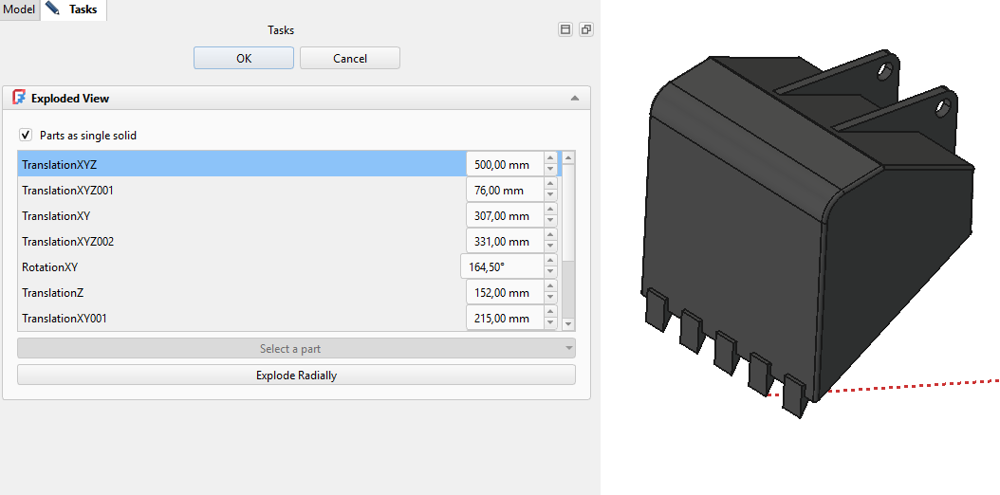
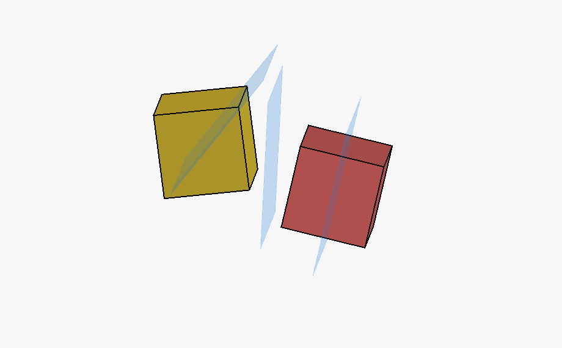
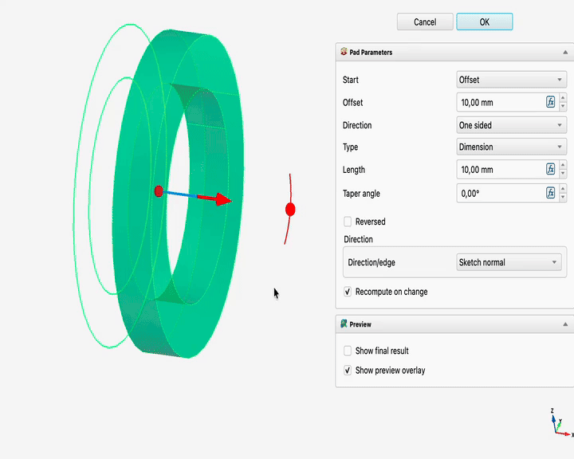
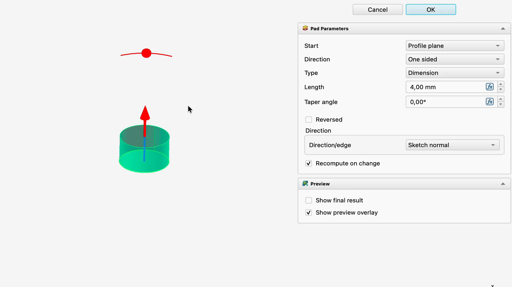
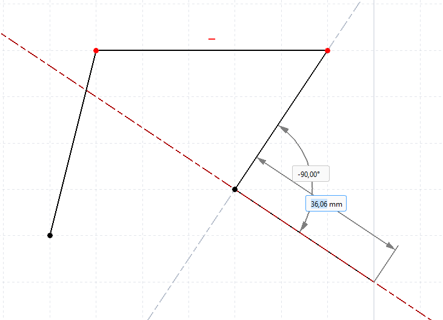
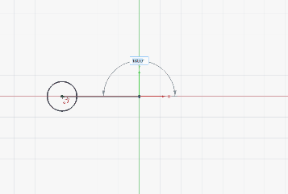

Release notes 26.3/cs
FreeCAD 26.3 je ve vývoji, zatím není známo předpokládané datum vydání.
Chybí vám nějaké funkce? Uveďte je ve fóru Poznámky k verzi v26.3.
Informace o tom, jak přispět k projektu FreeCAD, najdete na stránce Nápověda FreeCADu.
Všechny obrázky na této stránce musí mít příponu _relnotes_26.3
FreeCAD 26.3 byl vydán dne D měsíc rok, stáhněte si ho ze stránky Download. Na této stránce jsou uvedeny všechny nové funkce a změny.
Poznámky k předchozím verzím FreeCADu najdete v Seznamu funkcí.
 Obecné informace
Obecné informace
- FreeCAD přijal nový plán vydávání, který počítá se třemi stabilními verzemi ročně, a od verze 26.3 přešel na schéma verzování CalVer (YY.N). FEP-0003
- Nyní lze současně upravovat více dokumentů s nezávislými úkoly a zásobníky zpět/znovu, například mít otevřené dva náčrtky najednou (projekt GSoC). Pull request #21978
- Záložní soubory .FCBak lze nyní otevírat přímo z dialogového okna Soubor → Otevřít, aniž by bylo nutné je nejprve přejmenovat na .FCStd. Uložení takového souboru spustí Uložit jako…, aby se zabránilo náhodnému přepsání zálohy. Pull request #28454
- Nastavení formátu data zálohy .FCBak nyní při vytváření záloh ověřuje neplatné znaky v názvu souboru a nahrazuje neplatné znaky v časovém razítku. Pull request #25985
- Nastavení "Používání undo/redo v dokumentech" bylo odstraněno jako nadbytečné. Pull request #30616
Uživatelské rozhraní

|
Přizpůsobení klávesových zkratek bylo přesunuto do Editoru předvoleb. |

|
Navigační kostka byla vylepšena, a to především z hlediska vzhledu a funkčnosti jejích doplňkových tlačítek. Bylo přidáno tlačítko Domů. |
Další vylepšení uživatelského rozhraní
- Vestavěný textový editor nyní podporuje výběr řádků kliknutím na číslo řádku (a volitelně také podržením klávesy Shift pro výběr rozsahu). Pull request #27677
- Ve vestavěném textovém editoru je nyní vyhledávací pole předvyplněno aktuálně vybraným textem. Pull request #27674
- Dokumenty, jejichž soubory nejsou zapisovatelné, nyní ve stromovém zobrazení zobrazují překryvné označení jen pro čtení s popiskem vysvětlujícím, že změny nelze přímo uložit. Odkazy na dokumenty jen pro čtení nyní používají červené překryvné označení jen pro čtení. Pull request #26702
- Kliknutí na indikátor rozbalení/sbalení v stromovém zobrazení již náhodně nemění aktuální rozsah výběru. Pull request #29687
- Poklepání na jednu ze stran navigační kostky nyní nejen otočí pohled na tuto stranu, ale také vycentruje zobrazení. Pull request #28608
- Možnost kontextového menu Stromové struktury (příkaz Přepočítat) Přepočítat objekt má nyní klávesovou zkratku Ctrl+Shift+R. Pull request #27880
- Nyní je k dispozici tlačítko
 Přepnout spodní panely a klávesová zkratka Ctrl + 0 pro přepínání spodních panelů (Zobrazení sestavy a Konzole Pythonu). Pull request #28598
Přepnout spodní panely a klávesová zkratka Ctrl + 0 pro přepínání spodních panelů (Zobrazení sestavy a Konzole Pythonu). Pull request #28598 - Příkaz
 Zarovnat k výběru nyní podporuje vícenásobný výběr. Pull request #29182
Zarovnat k výběru nyní podporuje vícenásobný výběr. Pull request #29182 - 3D zobrazení nyní podporuje výběr tažením rámečku v běžných stylech navigace, včetně výběru oken zleva doprava a křížového výběru zprava doleva. Pull request #29547
- Poklepání na pole výrazu nyní vymaže výraz a zachová aktuální hodnotu. Pokud nedojde k žádné změně, výraz se po ztrátě fokusu obnoví. Pull request #29414
- Otáčení myši SpaceMouse nyní zohledňuje aktuálně nastavený režim středu otáčení při navigaci, včetně režimů Střed objektu a Přetahování u kurzoru. Pull request #29998
- Ve finálních verzích pro macOS se zařízení 3Dconnexion SpaceMouse nyní správně inicializují, místo aby hlásila, že Navigation Framework běží mimo balíček aplikace. Pull request #29465
- Dialogové okno VarSet Přejmenovat skupinu vlastností nyní nabízí automatické doplňování názvů existujících skupin vlastností, což usnadňuje přesun proměnných mezi skupinami. Pull request #30200
- Při ukládání souborů vytvořených ve starších verzích se nyní zobrazuje varování. Byla přidána volba, která umožňuje toto varování deaktivovat. Pull request #28389
- Při mazání seznamu naposledy použitých souborů se nyní před odstraněním seznamu zobrazí výzva k potvrzení. Pull request #27274
- Všechny widgety stavového řádku lze nyní přepínat pomocí kontextového menu. Pull request #30349
- Vestavěný textový editor prošel několika vylepšeními v oblasti zpětné vazby při vyhledávání. Pull request #29423
- Nyní je možné skrýt více objektů najednou. Pull request #30438
- Do kontextového menu konzole Pythonu byla přidána ikona a zkratka pro možnost Vymazat. Pull request #30551
- Nyní je možné otáčet pohled tažením za navigační kostku. Pull request #30727
- Vlastnosti VarSet typu Percent se nyní v editoru zobrazují s příponou %. Pull request #28730
- Byly vylepšeny barvy výběru a předvýběru pro lepší viditelnost a rozlišitelnost. Pull request #31050
- Byla přidána možnost smazat obsah skupiny pro více objektů najednou. Pull request #30586
- Nyní je možné přidávat vlastní panely nástrojů se skupinami příkazů Otevřít, Uložit a Nápověda. Pull request #31525
- Do kontextového menu 3D pohledu byly přidány akce Zobrazení poskytovatele. Pull request #30990
Systém jádra a API
Jádro

|
Byl přidán nový příkaz pro vložení |

|
Byl přidán nový příkaz |

|
Pokud se animace nespustí, klikněte na obrázek. |
Nástroj |
Další vylepšení jádra
- Vyhledávací pole v okně
 Nastavení nyní umožňuje prohledávat popisky, hodnoty v rozevíracích seznamech, zaškrtávací políčka a názvy skupin. Pull request #24283
Nastavení nyní umožňuje prohledávat popisky, hodnoty v rozevíracích seznamech, zaškrtávací políčka a názvy skupin. Pull request #24283 - Nástroj
 Měření nyní nabízí možnost zobrazovat výsledky měření kruhových prvků jako průměry namísto poloměrů.Pull request #24853
Měření nyní nabízí možnost zobrazovat výsledky měření kruhových prvků jako průměry namísto poloměrů.Pull request #24853 - Nástroj Měření nyní podporuje měření poloměru a průměru válcových ploch. Pull request #27044
- V systému macOS nyní soubory s příponou .FCStd podporují nativní rozšíření QuickLook, které umožňuje zobrazit miniaturu souboru ve Finderu i jeho úplný náhled. Pull request #25239
- Jednotky měření lze nyní převádět a zobrazovat přímo na stránce. Pull request #27462
- Nástroj Měření nyní zachovává vybranou jednotku měření pro měřený objekt, takže změna jednotek okamžitě aktualizuje výsledek v panelu úloh i 3D popisek. Pull request #29157
- Nástroj Měření nyní kromě stávajících typů měření dokáže vypočítat také poloměr a průměr kruhových ploch. Pull request #27415
- Nástroj Měření nyní zobrazuje jednotky plochy pomocí horních indexů v kódování Unicode. Pull request #28044
- Makra nyní podporují adresáře, do kterých se shromažďují soubory s nimi spojené. Pull request #27005
- Dialogové okno maker a příkaz Otevřít složku maker nyní otevírají nastavenou cestu k makrům namísto výchozího adresáře maker. Pull request #29224
- Nefunkční vestavěné akce pro ladění maker nyní zobrazují zprávu, která uživatele nasměruje k pracovnímu postupu vzdáleného ladicího programu, místo aby naznačovaly, že je tam k dispozici ladění pomocí breakpointů. Pull request #29889
- Nástroj Měření nyní dokáže vypočítat poloměr a průměr koulí a torusů. Pull request #29369
- Nástroj Měření nyní v režimu Vzdálenost podporuje zakřivené plochy. Pull request #29367
- Vzhled a umístění šipek Úhel Měření byly výrazně vylepšeny. Pull request #27135
 Funkce Výběr prvků pomocí rámečku nyní zohledňuje
Funkce Výběr prvků pomocí rámečku nyní zohledňuje  filtry výběru. Pull request #28982
filtry výběru. Pull request #28982- Nástroj Měření nyní podporuje kruhové plochy pro měření úhlů. Pull request #29803
- Nástroj Měření nyní podporuje vnitřní plochy náčrtu. Pull request #29551
- Funkce Rychlé měření nyní zobrazuje průměr kruhových ploch. Pull request #29385
- Filtry výběru nyní umožňují vybrat jiné entity v rámci poloměru výběru prohlížeče, místo aby okamžitě zobrazovaly stav zablokovaného výběru. Pull request #29705
- FreeCAD byl přizpůsoben pro OpenCascade 8, přičemž byla zachována kompatibilita s OpenCascade 7; došlo k aktualizaci geometrie, importu a exportu, CAM, nástroje Sketcher, sítě FEM a souvisejících kódových cest. Pull request #25502
- CMake nyní upozorňuje, že podpora Qt 5 je zastaralá a má být odstraněna, což vede tvůrce balíčků a sestavovače k přechodu na Qt 6. Pull request #30222
- V systémech typu Unix mají nyní zámkové soubory oprávnění pouze pro vlastníka a při exportu obrazu Coin se zabrání vytváření souborů, do kterých má oprávnění k zápisu kdokoli. Pull request #30239
- Předvolba sestavení Conda pro finální verzi nyní aktivuje
FREECAD_WARN_ERRORa související varování byla opravena, aby systém CI pro finální verzi zachytil nová varování kompilátoru včas. Pull request #30228 - Nástroj
 Transformace nyní umožňuje používat režim Střed hmotnosti / těžiště s odkazy a kontejnery dílů. Pull request #30208
Transformace nyní umožňuje používat režim Střed hmotnosti / těžiště s odkazy a kontejnery dílů. Pull request #30208 - Nástroj Transformace nyní při najetí kurzorem do blízkosti počátečního a koncového bodu hrany přichytí táhlo k těmto bodům, a to navíc k již existujícímu přichytávání ke středu hrany, přičemž zachovává orientaci táhla zarovnanou s hranou. Pull request #30213
- Vlastní režim přetahování Transformace nyní kromě výběru prvků ve 3D pohledu podporuje také výběr objektu ve stromovém zobrazení, jehož umístění se použije jako reference pro přetahování, a při přepnutí zpět do jiného režimu přetahování již nezůstává aktivní. Pull request #30943
- Byl vylepšen importér souborů JT, včetně podpory souborů JT 10.x. Pull request #29768
- Byla přepracována funkce ohraničujícího rámečku, která se využívá několika způsoby, mimo jiné v nástroji Přizpůsobit výběr a v režimu úprav náčrtu.Pull request #26291
- Byly zavedeny podrobné přepočty. Jedná se o přepočty založené na závislostech mezi vlastnostmi namísto objektů. Jedná se o experimentální funkci, kterou lze zapnout či vypnout pomocí nastavení. Pull request #25603
- Kalibrační nástroj
 Rovina obrazu nyní umožňuje otočit importovaný obrázek tak, aby se kalibrační linie zarovnala k nejbližšímu úhlu 45 stupňů (vodorovně, svisle nebo diagonálně), a dokáže obrázek vycentrovat na střed kalibrační linie. Nyní také podporuje zadávání pokynů. Pull request #30755 a Pull request #31291
Rovina obrazu nyní umožňuje otočit importovaný obrázek tak, aby se kalibrační linie zarovnala k nejbližšímu úhlu 45 stupňů (vodorovně, svisle nebo diagonálně), a dokáže obrázek vycentrovat na střed kalibrační linie. Nyní také podporuje zadávání pokynů. Pull request #30755 a Pull request #31291 - Podpora Měření pro
 referenční souřadnicové systémy byla výrazně vylepšena. Pull request #29720
referenční souřadnicové systémy byla výrazně vylepšena. Pull request #29720 - Nástroj
 Vlastnosti hmotnosti nyní dokáže kromě stávajících referenčních možností vypočítat i setrvačnost kolem libovolné vybrané přímky. Pull request #31157
Vlastnosti hmotnosti nyní dokáže kromě stávajících referenčních možností vypočítat i setrvačnost kolem libovolné vybrané přímky. Pull request #31157
API
Odstraněno rozhraní API pro Python
Změny v rozhraní API jazyka Python
Nové rozhraní API pro Python
- Pro rozhraní C++/PyCXX API programu FreeCAD byl přidán generátor stubů v jazyce Python, který využívá vstupní soubory .pyi umístěné v sousedství zdrojového kódu a provádí základní kontroly (smoke checks), aby zajistil platnost generovaných stubů. Pull request #29334
 Start
Start
 Správce doplňků
Správce doplňků
Správce doplňků v této verzi se zaměřuje na tři oblasti: instalaci a aktualizaci velmi rozsáhlých doplňků, správu balíčků Pythonu a podporu repozitářů doplňků hostovaných mimo GitHub.
Instalace a aktualizace
- Velmi rozsáhlé doplňky se instalují a aktualizují pomocí git. Doplňky, které katalog označuje jako příliš velké na to, aby je bylo možné uložit do mezipaměti v plném rozsahu typickým příkladem je knihovna Parts Library, nyní využívají git, je-li tento nástroj k dispozici na počítači uživatele. Při aktualizaci se stahují pouze změny, namísto opětovného stahování celého archivu, a v dialogovém okně se zobrazuje, která metoda se právě používá. Pull request #467 a Pull request #451
- Průběh instalace, zrušení a obnovení byly podstatně přepracovány. Dialogové okno s průběhem zobrazuje formátované objemy přenesených dat u stahování souborů ZIP a vlastní ukazatele průběhu systému Git s procentuálním údajem u instalací Git, přičemž rozlišuje mezi aktualizací a instalací. Zrušení určuje, zda se jedná o zastavení práce nebo následné uklízení, odstraní částečně stažený soubor v pozadí, aby se rozhraní mohlo nadále aktualizovat, a ukončí celý strom podprocesů. Neúspěšná instalace git nyní nabízí možnosti "Zkusit znovu" nebo "Stáhnout místo toho soubor ZIP" namísto hlášení slepé uličky. Pull request #467
- Odinstalováním makra dojde k odstranění jeho tlačítka z panelu nástrojů. Vlastní tlačítko na panelu nástrojů a soubory ikon, které Správce doplňků sám vytvořil při instalaci, jsou nyní při odstranění makra smazány, místo aby zůstaly zachovány a odkazovaly na chybějící makro. Pull request #471
Balíčky jazyka Python
- Správce balíčků Pythonu je nyní příkazem nejvyšší úrovně s funkčním rozhraním. Lze ho otevřít přímo z menu, aniž by bylo nutné procházet dialogovým oknem Správce doplňků. Dialogové okno bylo doplněno o tlačítko "Přidat balíček" pro instalaci balíčku podle názvu, tlačítko "Zastavit", které skutečně zruší probíhající operaci pip, animovaný ukazatel průběhu s živým řádkem podrobností zobrazujícím výstup samotného pipu a pole pro výběr instalační cesty. Pull request #396, Pull request #421, Pull request #458 a Pull request #472
- Zásady pro balíčky v Pythonu vycházejí ze zveřejněných souborů omezení a již nedochází k přímému dotazování PyPI. Pevně zakódovaný seznam
ALLOWED_PYTHON_PACKAGES.txtbyl odstraněn. FreeCAD zveřejňuje jeden soubor omezení pro každou vedlejší verzi Pythonu, v němž jsou všechny prověřené balíčky včetně tranzitivních závislostí pevně přiřazeny k přesné verzi. Správce doplňků tento soubor načte, uloží do mezipaměti a aplikuje jej prostřednictvím volby pip--constrainta zastaralé balíčky určuje porovnáním s prověřenou verzí, nikoli dotazováním na PyPI. Pull request #455 a Pull request #345
- Při instalaci závislostí v Pythonu již nedochází k vypršení časového limitu. Původní limit 120 sekund reálného času, který znemožňoval správnou instalaci při pomalém připojení nebo v případě velkých balíčků z repozitáře wheel, byl zrušen a nahrazen sledováním výstupu. Pull request #458 and Pull request #472
Uživatelské repozitáře
- Vlastní repozitáře fungují i s jinými hostiteli než GitHub. Správce doplňků určuje, jaký software daný gitový hostitel používá – včetně GitHubu, GitLabu, Gitea a Forgejo (včetně Codebergu) – na základě analýzy struktury URL adres surových souborů. Výsledek si ukládá do nastavení a využívá jej pro metadata, ikony, soubory README a stahování archivů. Rozbalování ZIP souborů rozpoznává nadřazený adresář archivu podle struktury, místo aby se spoléhalo na domněnky ohledně konvence pojmenování jednotlivých hostitelů. Pull request #426, Pull request #425 a Pull request #442
- Pole pro výběr větve u vlastního repozitáře je nyní volitelné. Pokud ho necháte prázdné, Správce doplňků si od repozitáře vyžádá jeho výchozí větev pomocí
git ls-remote, přičemž v případě neúspěchu se pokusí omaina poté omaster. Dříve se u nespecifikované větve předpokládalo, že se jedná omaster. Pull request #428
- Vlastní repozitáře zobrazují úplná metadata, ikony a stav aktualizace. Vlastní doplňky jsou vytvářeny stejným způsobem jako doplňky z katalogu – načtou soubor
package.xmla ikonu z hostitelského serveru, místo aby se zobrazovaly pouze jako holý název. Pull request #424 a Pull request #367
Změny v uživatelském rozhraní a další změny
- Text uživatelského rozhraní byl upraven tak, aby odpovídal specifikaci FEP-0007. Popisky nástrojů jsou formulovány v popisné třetí osobě, například "Zobrazí kompaktní pohled", názvy dialogových oken se píší s velkými počátečními písmeny a terminologie byla sjednocena na stránce nastavení, v odinstalačním programu i ve výběru zobrazení. Pull request #447
- Kategorie "Ostatní" již neskrývá nerozpoznané doplňky. Jakýkoli typ obsahu balíčku, který nemá vlastní kategorii – včetně typů zavedených až po vydání této verze Správce doplňků – se nyní zobrazuje v kategorii "Ostatní", místo aby byl ze všech kategorií odfiltrován. Pull request #470
- Uživatelské repozitáře se neřídí seznamem povolených modulů Pythonu v katalogu. Pokud všechny doplňky v instalaci pocházejí z repozitáře, který si uživatel přidal sám, jsou neprověřené závislosti Pythonu předloženy k potvrzení, místo aby byly tiše vynechány. Seznam povolených modulů se však opět uplatní, jakmile se v instalaci objeví alespoň jeden doplněk z katalogu. Pull request #427
- Chybně formátované ikony doplňků již nezpůsobují výstupy v konzoli. Ikony ve formátu PNG obsahující duplicitní bloky
iCCP, na které Qt upozorňuje při každém vykreslení, jsou nyní detekovány a zpracovány. Pull request #354
- Zobrazení zprávy je nyní podstatně přehlednější. Velká část rutinních stavových výstupů byla přesunuta z
PrintMessagedoPrintLoga skutečné problémy byly přesunuty doPrintWarning. Pull request #440
 Pracovní prostředí Assembly
Pracovní prostředí Assembly
 |
Do rozložených pohledů v modulu Assembly byly přidány ovládací prvky pro přesun. |
Další vylepšení pracovního prostředí Assembly
- Solver messages (overconstraint reports) were added to the Assembly task panel. Pull request #24623
- A new command has been added to select all joints associated with a chosen component. Pull request #27530
- A button was added to rotate joint offsets by 90 degrees. Pull request #29717
- Editing sketches from assemblies no longer briefly activates the sketch's source document or crashes when leaving the Assembly context. Pull request #29271
- Simulations now offer export to video format. Pull request #25307
- Exploded View can now be created temporarily. Pull request #25456
- Simulation export formats were improved. OpenCV was replaced by PyAV. WebM video format was added for cases when codec is available. The Save File dialog now also automatically appends the extension based on the selected file type. Pull request #30333
- The Edit Joint command was added to the context menu for joints. Pull request #30991
- A Snapshot feature was added making it possible to save and restore the current assembly state (placement and visibility). Pull request #25384
- Rigid Group joint type was added fixing all the selected components relatively to each other. Pull request #29605
 Pracovní prostředí BIM
Pracovní prostředí BIM
- ToDo (last check: 20260708, #31168):
- A BIM Report command has been added. It uses an SQL-like query language to select, filter, and aggregate data. Pull request #24078
- Removing a wall base now preserves the wall's placement and parametric dimensions for supported straight Draft or Sketch bases, and warns before removing unsupported complex bases. Pull request #24550
- Walls can now be created without a base object by default, with the selected wall baseline mode remembered in preferences. Pull request #24595
- The BIM toolbar layout was decluttered by grouping related commands, removing the Shape from Text and BIM Views entries from the default toolbar, and rearranging common drafting and copy tools. Pull request #25147
- A BIM Covering command has been added. It can apply finishes like flooring, wall cladding, ceiling tiles, or façade panels to existing geometry. Pull request #27222.
- BIM Windows now include a Sliding Door preset whose opening follows the
Openingproperty, and the Tree View context menu can invert the sliding direction. Pull request #27375 - BIM Windows now provide a task-panel options box for editing common window properties with expression-aware fields and a cancel action. Pull request #27381
- BIM Window types can now use LinkGroups, avoiding out-of-scope subvolume warnings while preserving unset base-object properties. Pull request #27420
- Walls now provide task-panel options for common wall properties, and the same quick-access task-box framework was extended to other BIM objects. Pull request #26758 and Pull request #27746
- BIM link handling was refactored, and the new Make Link command creates an
App::Linkand immediately starts a move operation for BIM workflows. Pull request #28104 - Sites now provide task-panel options for several site properties. Pull request #28504
- Status Bar input hints were added for BIM tools. Pull request #30511
Další vylepšení prostředí BIM
- Native IFC projects now also support a relative path to the IFC file. Pull request #24190
- The BIM Project command was removed from the toolbar, moved to the Utils menu, renamed for IFC-project clarity, and the Setup Project dialog now defaults to non-IFC-native projects. Pull request #25086
- BIM Nudge shortcuts now use Alt combinations to avoid conflicts with existing shortcuts. Pull request #28036
- Native IFC objects now expose the full active-schema class list for their object type in the
IfcClassproperty, including IFC2X3 type families. Pull request #28994 - Stair railings now follow stair visibility changes, including visibility inherited from parent objects such as levels. Pull request #29173
- The endpoints of walls without a base have been made editable with the Draft Edit command. Pull request #29860
- DrawingView cut lines now use the default line width and cut areas line thickness ratio preferences for thicker cut-line output. Pull request #30149
- IFC import now treats a multicore preference value of 0 as disabled before creating the IfcOpenShell geometry iterator, avoiding invalid worker counts when multicore processing is turned off. Pull request #30201
- The classification systems download URL was updated. Pull request #30247
- In the top part of the BIM Views Manager a Height column has been added. The Level column has been relabeled to Elevation. Pull request #30420
- Draft Edit command was added to the Modify menu and toolbar in BIM. Pull request #31538
 Pracovní prostředí CAM
Pracovní prostředí CAM

|
Do nastavení CAM byly přidány knihovna strojů a editor. Bylo rovněž přidáno postprocesování založené na stroji. Definice strojů lze také implementovat jako doplňky.
Pull request #26533, Pull request #27507 a Pull request #28405 |
Další vylepšení prostředí CAM
- The G-code export dialog now shows line numbers. Pull request #23862
- The MillFace operation was reimplemented with significant improvements as MillFacing. Pull request #24367
- SimpleCopy now allows multiple selection of operations. Pull request #24297
- OCL Adaptive Algorithm was added to the Waterline operation. Pull request #23149
- The Sorting Mode property was added to Profile and Pocket operations, allowing optional shape processing following the order of shape selection. Pull request #27410
- Support for rest machining was added to the Adaptive operation. Pull request #27908
- Hidden Approximation property was added to the DressupTag operation. It may significantly reduce the number of commands if the path contains non-horizontal arc moves (e.g., helix path). Pull request #28502
- Tapping was removed as an experimental feature and consolidated into Drilling as a new strategy. Pull request #27506
- Circular Hole operation was significantly improved, including a new C++ 2-Opt TSP solver with Python bindings for improved hole sorting performance as well as new sorting modes and manual reordering in the GUI. Pull request #23093
- New style LineZFollow was added to the LeadInOut operation. It can be used as a replacement for ArcZFollow, as simpler and requiring less computation. Pull request #27986
- The RampEntry dressup can now be applied to operations that already use a LeadInOut dressup. Pull request #28496
- It is now possible to manually set RetractThreshold in Profile and Pocket operations. Pull request #21738
- Manual selection of faces or edges for Drilling or Helix Drilling operations is now possible. Pull request #27494
- The helix and spiral generators of the Helix operation were improved to provide better results and allow more control. Pull request #21971
- Auto-select for drillable faces was optimized and can now find cylinder faces that have more than 3 edges. Pull request #27585
- The Optimize Linear Paths option was added to the Waterline OCL Adaptive Algorithm to remove unnecessary co-linear points from G-code output. Pull request #27040
- The new CAM simulator was integrated as an MDI widget into the main window. Pull request #22204
- The Copy operation tool can now copy all operations and do it recursively. Pull request #24819
- The Toggle operation now supports Job and Operations groups. Pull request #24872
- It is now possible to cancel G-code export. Pull request #25273
- Tolerance can now be set for Tag Dressup, Engrave, and Deburr operations to change the precision of segmentation of complex shapes while creating a path. Pull request #26127 and Pull request #26128
- The Engrave operation can now use arc approximation for complex curves, reducing G-code command count and producing smoother G2/G3 output where applicable. Pull request #29528
- Adaptive operation now automatically picks the diameter of the helix entrance. Pull request #23980
- The Adaptive operation now rejects invalid lead-in start points more reliably, preventing short slotting moves near inside corners that could violate the configured step-over. Pull request #29971
- CAM task panels now support selecting shapes from different objects. Pull request #22304
- Vcarve routing is now improved using "virtual edge backtracking". Pull request #25049
- It is now possible to postprocess only selected Operations from the Job and select operations inside Dressup. Pull request #22764
- The loop selection tool was improved and now returns the wire if edge(s) selected and other methods failed. Pull request #24185
- The loop selection tool can now find several horizontal wires when two or more selected edges do not belong to the same wire. Pull request #27497
- The loop selection tool can now select all edges from a selected shape when no subelements are selected. Pull request #29523
- A cooling feature was added to the Kinetic postprocessor. Pull request #25022
- The Units (Metric/Imperial) property was added to ToolBits. Pull request #25783
- The new CAM simulator now uses the same ortho/perspective view mode and navigation style as the 3D View. Pull request #23073
- The Pocket operation can now handle horizontal edges in addition to faces. Pull request #27750
- The Op Final Depth property of the Engrave operation now has a better default value depending on stock and engraving shape. Pull request #26543
- Start Point can now be set from the task panel for Profile and Pocket operations. Pull request #29502
- The Circular Hole Base feature used to select Base Geometry for some operations now shows position and blind state (for cylinder faces) in addition to face name and diameter. Pull request #27869
- CAM operations now recover more gracefully when linked Base Geometry becomes invalid: the path is cleared, the operation is marked with an error state, and invalid Base entries can be removed from the task panel. Pull request #27559
- The Helix operation now has the Helix Max Ramp Angle property while Helix Pitch was renamed to Helix Max Pitch. Pull request #29286
- The Zig Zag Angle property of the Pocket operation was renamed to Angle. It is now hidden if the selected pattern is Offset. Pull request #26842
- A new dressup tool was added to allow mirroring paths. Pull request #21820
- A rapid move from Clearance Height to Safe Height was added at the beginning of the Slot operation's G-code. Pull request #25845
- The Slot operation now handles perpendicular and start-to-end paths for multiple edges or faces more reliably, supports straight edges and non-horizontal arcs, and clears invalid paths when a slot cannot be created. Pull request #25090
- The Slot operation task panel now includes the CutPattern option, whose values were renamed to Bidirectional and Directional; the removed LayerMode behavior now matches other operations' step-down handling. Pull request #25867
- The CAM context menu was improved. Pull request #26492
- Engraving has two new properties: Pattern (allows swapping the direction after step down to exclude retraction) and Reverse (forces direction change). Pull request #22226
- Linking now considers the tool shape. Pull request #28180
- The Array tool's Jitter feature was improved. Pull request #26326
- The HandleMultipleFeatures feature can now process more cases for the Area operation. Pull request #26867
- The DressupTag tool can now automatically place tags for several closed paths. Pull request #22468
- The DressupTag tool now scales better with many edges. Pull request #29094
- The Z Depth Correction Dressup now shows a warning instead of an error when the path is outside the probe area. Pull request #28582
- The Adaptive operation now uses helix generator to create a helix entry. Helix properties were moved to the Adaptive Helix Entry group. There are also new property names Helix Max Ramp Angle and Helix Max Pitch. Pull request #22357
- A new Rotary Surface operation was added for 4th axis surfacing. Pull request #29751
- Toolpath rendering for multi-revolution rotary moves now uses the full angular travel, avoiding coarse display segments on long G0/G1, G2/G3, and drilling-cycle rotations. Pull request #29707
- The job creation and editing dialogs were improved. Job creation now includes a unit schema selector, template description was added to the json and there is a machine selector, as well as a button to create new machines on the General tab. Several other widgets within those panels were also enhanced. Pull request #29861
MachineState.G0F, and.ReturnModewere added for Drilling commands. Pull request #29892- CAM drilling cycle expansion now uses MachineState for more accurate machine state tracking while expanding drilling cycles. Pull request #30112
- The Drilling, Helix and MillFacing linking options now include collision-avoidance strategies for using retract height, clearance height, line-of-sight checks, tool diameter, or tool shape. Pull request #29983
- The Linking generator was added to the Engrave and Deburr operations to use the safe height instead of clearance height for linking moves. The Linking Mode and Safety Margin options were added to the task panels, also for Drilling and Helix operations. Pull request #29959
- The loop selection tool can now handle horizontal faces. Pull request #26786
- A Points pattern type option was added to the Array operation. With this type the position and direction of array elements is taken from selected shapes. Pull request #23606
- Support for expressions in custom G-code was added. Expressions must be enclosed in
@characters. Pull request #30737
 Pracovní prostředí Draft
Pracovní prostředí Draft
- ToDo (last check: 20260708, #31057)
 Pokud se animace nespustí, klikněte na obrázek. |
Zadání hodnoty do libovolného vstupního pole X/Y/Z/Délka/Úhel v panelu úloh Draft a BIM nyní automaticky uzamkne dané pole, čímž se zabrání tomu, aby 3D kurzor přepsal zadanou hodnotu. Zamčená pole jsou označena ikonou zámku v rolovacím poli, omezují pohyb kurzoru ve 3D pohledu na zamčené hodnoty a lze je odemknout kliknutím na ikonu, poklepáním na pole nebo vymazáním hodnoty. |
- Draft snapping now supports B-spline knots. Pull request #26571
- Draft in-command shortcut preferences can now contain multiple characters, making localized single-character shortcuts possible. Pull request #26950
- The Working Plane command now moves the working plane origin to a pre-selected vertex without changing its orientation. Pull request #27979
- Draft angular dimensions now create extension lines. Pull request #27987
- Polar Array and Circular Array are now aware of the active working plane. Pull request #28324
- SVG import can now approximate suitable curves to arcs and lines. Pull request #29142
- SVG import now supports UTF-16 encoded files, such as SVG files generated by some Windows applications. Pull request #29244
- Draft angular dimensions now honor overshoot settings. Pull request #29298
- Draft Annotation and Modification tools now use input hints. Pull request #29649, Pull request #30436 and Pull request #30437
- A Draft Hatch can now be applied to multiple objects and/or individual faces belonging to one or more objects. Pull request #30578
Další vylepšení prostředí Draft
- A check to prevent consecutive identical points has been added to the Draft Line, Draft Wire, Draft BSpline and Draft BezCurve commands. Pull request #29372
- Draft Trimex now reports unsupported sketch selections before opening the task panel, avoiding a misleading no-op workflow. Pull request #29845
- For closed wires and B-splines Draft Edit offers the new Set Point as First option in the node context menu. Pull request #30830
- Draft Grid settings are now also stored in the document settings, not only in the preferences. Pull request #30696
 Pracovní prostředí FEM
Pracovní prostředí FEM

|
Bylo přidáno několik nových nástrojů, které rozšiřují možnosti síťovacího modulu |
 Pokud se animace nespustí, klikněte na obrázek. |
Transformace lokálního souřadnicového systému lze nyní aplikovat i na hrany 2D modelů. |
Další vylepšení prostředí FEM
- The
 Electric Charge Density load now has a Concentrated checkbox in the Total Source mode to use concentrated instead of distributed load (making it also applicable to edges and vertices) with CalculiX. Pull request #25237
Electric Charge Density load now has a Concentrated checkbox in the Total Source mode to use concentrated instead of distributed load (making it also applicable to edges and vertices) with CalculiX. Pull request #25237 - The
 FEM results objects now support the animation of half cycles in addition to reversed full cycles. Pull request #24129
FEM results objects now support the animation of half cycles in addition to reversed full cycles. Pull request #24129 - The
 Section Print feature now supports 2D models and electric flux in electrostatic analyses. Pull request #25081
Section Print feature now supports 2D models and electric flux in electrostatic analyses. Pull request #25081 - The Neumann mode of the
 Electrostatic potential boundary condition can now be used to apply a magnetic flux density boundary condition. Pull request #25897
Electrostatic potential boundary condition can now be used to apply a magnetic flux density boundary condition. Pull request #25897 - In Z88 exports, materials and elements without references can now be used as default values for mesh elements that do not have explicit references. Pull request #29185
- The Displace Mesh property was added to the refactored
 CalculiX solver, making it possible to view true scale deformation of the mesh without having to use the Warp filter. Pull request #27786
CalculiX solver, making it possible to view true scale deformation of the mesh without having to use the Warp filter. Pull request #27786 - The addArrayFromFunction Python function was added, making it possible to create custom arrays based on the
 pipeline fields. Pull request #26076
pipeline fields. Pull request #26076 - A context menu command to
 clear mesh groups was added. Pull request #27945
clear mesh groups was added. Pull request #27945 - A log verbosity preference was added for
 Elmer. Pull request #28058
Elmer. Pull request #28058 - The None Field Color property was added to the results pipeline and filters to set the color when the displayed field is None (can be helpful e.g. when using the Glyph filter). Pull request #28028
- All solver commands are now always shown (even if a given solver is not installed) and are grouped in the toolbar as well as in the menu. The default icon in the toolbar depends on the default solver selected in the Preferences. Pull request #28144
- Material assignments are now read from the CalculiX's .frd results files. They can't be accessed in FreeCAD yet, but they can be visualized in ParaView upon conversion to .vtm format. Pull request #27847
- The
 Non-linear mechanical material objects are now grouped under the
Non-linear mechanical material objects are now grouped under the  Solid Material objects. The Geometrical Nonlinearity and Material Nonlinearity properties are now Boolean. The latter is enabled by default and only applied if any material in the analysis has a non-linear mechanical material object assigned to it. Otherwise, it is ignored. Pull request #27862
Solid Material objects. The Geometrical Nonlinearity and Material Nonlinearity properties are now Boolean. The latter is enabled by default and only applied if any material in the analysis has a non-linear mechanical material object assigned to it. Otherwise, it is ignored. Pull request #27862 - The Z-refinement algorithm of
 Netgen, allowing the creation of extruded meshes, now also supports shells. Pull request #28204
Netgen, allowing the creation of extruded meshes, now also supports shells. Pull request #28204 - It is now possible to edit the input files for the meshers to add some custom commands for mesh generation, similar to what could already be done for the solvers. Some general preferences of the FEM Workbench were improved too. Pull request #27942
- The Electrostatic potential boundary condition is now named Electromagnetic boundary condition. Some smaller renames were are done. Pull request #27614
- The
 Z88 solver was refactored. It can be used with both open-source versions of Z88 - Z88OS and Z88Adria. It supports several element types and basic features for linear analyses. Pull request #28944
Z88 solver was refactored. It can be used with both open-source versions of Z88 - Z88OS and Z88Adria. It supports several element types and basic features for linear analyses. Pull request #28944 - The Iterations Control Parameter Field property was added to the CalculiX solver to allow adjusting the convergence criteria. Pull request #29227
- The Beam Reduced Integration property of the CalculiX solver was replaced by the generalized Reduced Integration property that replaces standard solid, face (shell, 2D) and beam elements with their reduced integration counterparts. Pull request #29223
- The refactored CalculiX solver is now used by default. Pull request #29220
- The Section print feature can now be used with the Z88 solver. Pull request #29188
- Materials now have the Material Name property, making it easier to identify the actual materials represented by the material objects in the Analysis container. Pull request #29609
- Three new
 FEM examples were added for CalculiX: basic 1D fluid network, axisymmetric shaft and plane stress plate with a hole. Pull request #29697 and Pull request #29711
FEM examples were added for CalculiX: basic 1D fluid network, axisymmetric shaft and plane stress plate with a hole. Pull request #29697 and Pull request #29711 - Several CalculiX preference labels were changed for clarity, including geometrical nonlinearity, advanced solver controls, eigenmode count, and frequency bounds. Pull request #30099
- The Data and extractions widget no longer raises an exception if the pipeline is empty. Pull request #29739
 Displacement boundary condition now correctly writes the rotations in radians for the CalculiX solver. Pull request #29689
Displacement boundary condition now correctly writes the rotations in radians for the CalculiX solver. Pull request #29689- Node indexing was improved for the Z88 solver. Pull request #29606
- The Groups of Nodes property was removed to better handle groups in meshers. Pull request #29440
 Force load now uses the global placement of the reference geometry for the force direction (for example, if the reference is inside a Part container). Pull request #29513
Force load now uses the global placement of the reference geometry for the force direction (for example, if the reference is inside a Part container). Pull request #29513- The dependence of FEM examples on workbenches other than Part was removed. Pull request #29488 and Pull request #29438
- For the Mesh refinement command, the expected mesh property was changed to Mesh Refinement List. Pull request #29554
- The Z88 solver can now use different cross sections assigned to different truss elements. Pull request #29379
 Pressure load now takes into account the shell thickness for plane stress models solved with the Z88 solver. Pull request #29377
Pressure load now takes into account the shell thickness for plane stress models solved with the Z88 solver. Pull request #29377- The Z88 solver now uses materials and elements without references as default. Pull request #29185
- The legacy SolverCalculiX object created with old FreeCAD versions is now updated to the new solver object. Pull request #29102
 Fixed boundary condition now works properly (constrains only the available DOFs) for plane stress, plane strain, axisymmetric, membrane and truss elements. Pull request #28986
Fixed boundary condition now works properly (constrains only the available DOFs) for plane stress, plane strain, axisymmetric, membrane and truss elements. Pull request #28986- Some redundant log messages generated during the mesh element search stage for the CalculiX solver were removed. Pull request #28049
- The legacy get_ccx_version check searching for a very old version of CalculiX was removed. Pull request #28194
- Transparency was removed from equation icons to make their non-grayed-out state clearer. Pull request #28193
- The results pipeline no longer crashes if its data is a mutiblock with a null block. Pull request #28171
- The pipeline frames now include time/frequency units for the refactored CalculiX solver. Pull request #27845
- The
 clipping plane command can now be enabled in feature edit mode. Pull request #25145
clipping plane command can now be enabled in feature edit mode. Pull request #25145 - Mesh error handling was improved for the solvers, including proper error messages when there's no mesh or multiple meshes are present. Pull request #29186
- The names of objects were improved, mainly by removing the redundant word "constraint". Pull request #30665
- A new electrostatic spark gap FEM example was added for CalculiX and Elmer. Pull request #30928
- The default pressure value was changed to 1 MPa. Pull request #31036
- The getNodeColor() and getElementColor() methods were implemented. Pull request #30726
- Two new FEM examples were added for CalculiX involving radiation
 heat flux - one for radiation to ambient and one for surface-to-surface (cavity) radiation. Pull request #31171 and Pull request #31175
heat flux - one for radiation to ambient and one for surface-to-surface (cavity) radiation. Pull request #31171 and Pull request #31175  Contact and
Contact and  Tie constraint now include options to change the side of a shell surface. Moreover, tie constraint now has separate selectors for master and slave sides. Pull request #31055
Tie constraint now include options to change the side of a shell surface. Moreover, tie constraint now has separate selectors for master and slave sides. Pull request #31055- Elmer's mechanical equations now properly handle 2D coordinate systems. The axisymmetric shaft example from CalculiX is now also available with Elmer. Pull request #31610
- Eigenvalues (natural frequencies and buckling factors) obtained with Elmer's
 Elasticity equation are now saved to the text document generated with the analysis. Pull request #31667
Elasticity equation are now saved to the text document generated with the analysis. Pull request #31667 - Elmer's
 Heat equation now supports radiation heat flux including cavity (surface-to-surface) radiation. Pull request #31641
Heat equation now supports radiation heat flux including cavity (surface-to-surface) radiation. Pull request #31641 - Magnetodynamic 2D equation now properly supports Joule heating calculations with Heat equation. There is also a new example for eddy currents heating, and the frequency for the harmonic equation can be entered directly in Hertz instead of being specified as an angular frequency. Pull request #31690
- A new 3D magnetization FEM example was added for Elmer's Magnetodynamic equation. Pull request #31856
- Eigen analyses (modal and buckling) performed with Elmer's Elasticity equation now use multiframe result pipelines. Pull request #31851
- The Scale Factor of the
 Glyph filter was improved, including the support for expressions. Pull request #31862
Glyph filter was improved, including the support for expressions. Pull request #31862 - The Apply button in the solver task panels was renamed to Run to make it clear that it starts calculations. Pull request #31954
 Pracovní prostředí Inspection
Pracovní prostředí Inspection
Further Inspection improvements
- Vyskakovací okno Vizuální kontrola bylo přeměněno na panel úloh. Pull request #31580
 Pracovní prostředí Material
Pracovní prostředí Material
Další vylepšení pracovního prostředí Material
- The Material-Metals database has been extended with additional copper and copper-alloy materials. Pull request #25832
- Material assignment via Std SetMaterial now wraps changes in a transaction, replacing the "Close" button with "OK" and "Cancel" to enable proper undo support. Pull request #27910
- Material library paths using symbolic links are now handled correctly by the Materials Editor and material-loading API calls. Pull request #28500
 Pracovní prostředí Mesh
Pracovní prostředí Mesh
Další vylepšení prostředí Mesh
- Widget stavu nyní zobrazuje důvod, proč se nepodařilo přidat trojúhelník do sítě. Pull request #29945
 Pracovní prostředí OpenSCAD
Pracovní prostředí OpenSCAD
Další vylepšení prostředí OpenSCAD
 Pracovní prostředí Part
Pracovní prostředí Part
 |
Byl přidán nový režim připojení |
Další vylepšení prostředí Part
- Byla přidána nová metoda pro rozdělení B-splineové křivky na dvě křivky v daném bodě. Pull request #26716
- Extrudování textových náčrtů v pracovním prostředí Part je nyní rychlejší, zejména u náčrtů, které produkují mnoho spojů. Pull request #28344
- Systém připojení nyní při výběru referenčních rovin počátku prostřednictvím objektu Počátek správně nabízí režimy, jako je například XY rovnoběžně s rovinou. Pull request #28958
- Při vytváření prostorů typu Loft jsou nyní povoleny platné kombinace profilů, které mají stejné těžiště, přičemž je i nadále zajištěna ochrana proti chybě způsobené duplicitními profily. Pull request #29982
- Byl přidán jednotný nástroj pro tvorbu ploch, který nahrazuje dosavadní přístup založený na více nástrojích a využívá jediný algoritmus zpracovávající všechny rovinné i nerovinné případy. Jedná se o nový výchozí nástroj pro tvorbu ploch. Pull request #28788
- Nástroj Projekce na plochu nyní přijímá vnitřní plochy náčrtu jako vstup pro projekci na plochu. Pull request #30425
- Nástroj Zrcadlení nyní zohledňuje umístění odkazu na umístěný objekt. Pull request #30987
 Pracovní prostředí Part Design
Pracovní prostředí Part Design

|
Do nástroje |

|
Při vytvoření |

|
Pattern tools now use OVP (On-View Parameters) fields to control spacing overrides implemented in the previous release. |

|
Interactive draggers were added to the Sphere, Box and Cylinder (additive and subtractive) primitive tools. |

|
An interactive dragger was added to the |
 Click on the image if the animation does not start. |
 Click on the image if the animation does not start. |
 Click on the image if the animation does not start. |
Further Part Design improvements
- Interactive draggers now support configurable coarse snapping, allowing larger steps by default with a modifier key (e.g. Shift) for fine movement; the snap step sizes and modifier key are configurable in the preferences. Pull request #28384
- Multi-selection is now supported for the Additive and Subtractive Pipe path edges list. Pull request #27962
- Errors from Part Design dress-up features such as chamfers and fillets are now shown in the notification area and Report view instead of a popup dialog, allowing users to stay in the task panel. Pull request #28131
- Now unhiding a Body with no visible features also unhides its tip. Pull request #24887
- Changing a Pad to the Up To Face type no longer crashes if the feature is not inside a Body; an error is reported instead. Pull request #30022
- Pressing Space on an element selected from the 3D view (e.g. from selecting a face) now toggles the visibility of the entire PartDesign Body instead of the last feature, making it easier to show or hide bodies in assemblies or files with multiple bodies. Selection in the Tree view still toggles the selected object. Pull request #29110 and Pull request #30231
- Input hints were implemented for the interactive control draggers. Pull request #29631
- SubShapeBinder now uses the BuildFace face maker to handle overlapping geometry. Pull request #29249
- A Fuzzy Tolerance property was added to override the default fuzziness/tolerance for boolean operations determined from the size of the input shapes. Pull request #29984
- Suppressing a feature now doesn't result in unnecessary recomputes and thus works instantly. Pull request #29219
- Strikethrough was added to labels of suppressed features. Pull request #27808
- Transformation tools now have better error handling for empty features. Pull request #26565
- The Helix tool has better error handling for multiple solids cases now. Pull request #29339
 Part Design Bodies used inside a
Part Design Bodies used inside a  boolean feature are now temporarily made visible when activated for editing, and hidden again when deactivated, removing the need to manually toggle result visibility or use a SubShapeBinder workaround. Pull request #30002
boolean feature are now temporarily made visible when activated for editing, and hidden again when deactivated, removing the need to manually toggle result visibility or use a SubShapeBinder workaround. Pull request #30002- PartDesign Body and
 Clone Base Feature placement is now correctly preserved when the Body is inside a Part container that is not at the origin, and when a clone's Base Feature is changed, fixing incorrect displayed geometry and placement in these cases. As a side effect, positioning the object to be cloned at a specific location before cloning can now be used to control the shape's placement relative to the resulting Clone Body's origin. Pull request #31235
Clone Base Feature placement is now correctly preserved when the Body is inside a Part container that is not at the origin, and when a clone's Base Feature is changed, fixing incorrect displayed geometry and placement in these cases. As a side effect, positioning the object to be cloned at a specific location before cloning can now be used to control the shape's placement relative to the resulting Clone Body's origin. Pull request #31235 - Creating a PartDesign Body with a Base Feature now preserves the source object's appearance, including per-face colors. Pull request #31767
- Updating a Base Feature now automatically triggers recompute. Pull request #31406
- Creating a PartDesign Body with a Base Feature no longer requires the source object to belong to the same Part container as the new Body, removing a restriction that was especially limiting for nested files and assemblies. Pull request #31763
Further Points improvements
Further Reverse Engineering improvements
Further Robot improvements

|
Thanks to AstoCAD, a |
 Click on the image if the animation does not start. |
Thanks to AstoCAD, a new |
 Click on the image if the animation does not start. |
Internal face generation now correctly handles complex overlapping geometry such as three or more intersecting circles, where previously some face regions were not generated at all. |

{kind=link}
{kind=link}
{kind=link}
{kind=link}
{kind=link}
 |
Perpendicular and parallel autoconstraint hint lines were added. There is also a preference to disable them. |
{kind=link}
 Click on the image if the animation does not start. |
The |
{kind=link}
Further Sketcher improvements
- It is now possible to import Bézier and Offset curves as
 External geometry. Pull request #25144
External geometry. Pull request #25144 - The Merge Sketches command now imports external geometry when possible, remaps constraints that reference external geometry, and creates the merged sketch inside the shared Body when all source sketches belong to one. Pull request #29497
- Copy, cut and paste now support text geometry and
 Group constraints. Pull request #28728
Group constraints. Pull request #28728 - When creating or editing circular dimensions, it is now possible to switch between the radius and diameter type. Pull request #26794
- The constraint list now displays the type of the constraint in the name. Pull request #26797
- A new selection mode was added to
 Symmetric constraint. Now it is also possible to select an element (line, arc, or open B-spline) and a symmetry line. Pull request #25525
Symmetric constraint. Now it is also possible to select an element (line, arc, or open B-spline) and a symmetry line. Pull request #25525 - Internal faces are now visible from both sides of the sketch plane, and multi-selection highlighting with Ctrl+click now correctly highlights all selected faces. Pull request #28655 and Pull request #28651
- Internal face generation now handles self-intersecting B-splines and dangling edges, while keeping stable mapped names for split edge fragments. Pull request #28964
- Double-clicking a geometric constraint now triggers its rename. Pull request #27678
- Double-clicking selection now also works with external geometry. Pull request #28105
- The Grid and Make Internals properties are now enabled by default for new sketches, and a grid transparency preference has been added. Pull request #28771 and Pull request #28791
- Sketcher now avoids unnecessary solves when dragging constraints, deleting sketch elements, and leaving dimension tools, improving responsiveness in these workflows. Pull request #28652
- The Sketcher AutoColor property now immediately applies preference colors to existing sketches when enabled, without requiring the document to be saved and reopened. Pull request #30185
- Selected distance constraints (point-line, circle-circle, and circle-line) now use orientation to prevent flipping. Pull request #26518
- Line-circle and line-arc tangent constraints now use computed orientation, keeping tangent-constrained geometry on the intended side while solving. Pull request #29015
- The Create symmetry constraints option of the
 Symmetry tool was improved to avoid overconstraints. It is now also enabled by default. Pull request #28118 and Pull request #28319
Symmetry tool was improved to avoid overconstraints. It is now also enabled by default. Pull request #28118 and Pull request #28319 - Copying Sketcher geometry as Python code now keeps more coordinate precision, reducing broken closed profiles after copy and paste. Pull request #29211
- There is now a Cancel button, making it possible to discard modifications in a sketch. Pull request #29337
 Horizontal Dimension,
Horizontal Dimension, Vertical Dimension, and
Vertical Dimension, and  Distance Dimension are now positioned better by default to avoid overlap with the lines being constrained. Pull request #29538
Distance Dimension are now positioned better by default to avoid overlap with the lines being constrained. Pull request #29538- Sketcher box selection now takes into account the selection filters. Pull request #28982
- Arc length dimensions are now positioned better for larger arc spans. Pull request #29594
- Dimension labels are now oriented based on the view rotation so that they won't get displayed upside down anymore. Pull request #29569
- OVP keyboard handling was improved: entering numbers, punctuation, deletion keys or pasted values switches directly to value editing, while holding Alt temporarily restores camera controls. Pull request #29477
- While entering OVPs for rectangles, lines, and slots, Sketcher now keeps the captured cursor direction after a length or angle value is set, preventing the preview geometry from flipping as the mouse moves. Pull request #24904
- The
 Text tool now stores only the font name in the document instead of an absolute local font path, improving file portability between systems. Pull request #28418
Text tool now stores only the font name in the document instead of an absolute local font path, improving file portability between systems. Pull request #28418 - A new preference was added to control the font type (in addition to font size) for labels. Pull request #26600
- Sketcher geometry now updates correctly after removing part of a constraint from a fully constrained sketch. Pull request #29812
 Angle dimension lines are now positioned better. Pull request #29630
Angle dimension lines are now positioned better. Pull request #29630- Arcs can now be selected directly while the Angle dimension tool is active, making it possible to create arc angle dimensions without first preselecting the arc. Pull request #29679
- The Sketcher Dialog has two new commands - to delete all constraints and to delete filtered constraints. Pull request #29993
- The Dimension tool now uses input hints. Pull request #30630
- The Point-On-Object constraint now supports autoconstraints along the line. Helper lines are displayed for it. Pull request #30332
- OVPs were added for arc of ellipse, hyperbola and parabola. Pull request #29318
- Input hints were added for B-spline tools. Pull request #30628
- Autoconstraints now work not only when creating geometries, but also when dragging them. Pull request #29771
- Selection filters now support internal sketch faces. Pull request #30259
- The
 geometry creation mode state is now remembered per sketch instead of per FreeCAD session. Pull request #30761
geometry creation mode state is now remembered per sketch instead of per FreeCAD session. Pull request #30761 - Icons of external geometries in the Elements panel now have a construction variant. Pull request #28507
- Geometry now has selection priority over constraint icons, labels and dimension lines. Pull request #30792
- Sketch internal faces now have a different color with better contrast. Pull request #31369
- Input hints were added to pattern tools. Pull request #31536
- The
 Trim tool now supports Sketcher axes. Pull request #30798
Trim tool now supports Sketcher axes. Pull request #30798 - Point-on-object constraints are now automatically created when dragging curves (arcs and circles). Pull request #31295
- Dimensional constraint lines in the Sketcher now have configurable line width and pattern preferences, allowing users and theme authors to tone down visually dominant dimension lines. Pull request #31405
- Handling of negative dimension constraint values was improved. Pull request #30587
- There is now a preference to change the pattern and width of Sketcher axes. Pull request #31679
Further Spreadsheet improvements
- The color picker was redesigned and has two buttons - for custom colors and for resetting. Pull request #28698
Further Surface improvements

|
Annotation tools have been reworked with improved rich-text annotation editing. Pull request #24624 |
Further TechDraw improvements
- Smooth edges in TechDraw are now rendered with a thin line as required by ISO drawing standards. Pull request #27747
- Section line font, font size, and arrow size in TechDraw Section Views are now configurable per view via view properties. Pull request #27521
- TechDraw angle dimensions now support displaying the supplementary angle (180° minus the measured angle) via a view property. Pull request #27055
- Scene drawing is now significantly faster. Pull request #25898 and Pull request #28702
- Rendered scene views now exclude viewer decorations such as the NaviCube from TechDraw scene captures. Pull request #28943
- Manual changes to TechDraw view and dimension X/Y position properties now take priority over snapping, and dimension snapping parameters are configurable in the preferences. Pull request #30154
- The Insert Active View task panel has been redesigned with improved spacing, a combobox for background style selection, and grouped crop settings that disable automatically when not in use. Pull request #28085
- There is now a context menu option to toggle grid for the active page. Pull request #29083
- Projected views of tori and similar concentric-arc shapes now preserve legitimate outline arcs instead of deleting them during duplicate-edge cleanup. Pull request #29637
- The default TechDraw page color in the FreeCAD Light preference pack is now white, avoiding gray page backgrounds when printing. Pull request #30129
- The task panel of the Balloon Annotation tool was polished. Pull request #28101
- The ASME ANSIB TechDraw template now has a transparent background, matching the other drawing templates. Pull request #30025
- Expressions can now be attached to any TechDraw template fields. Pull request #27117
- UI improvements were applied to 8 task panels as part of an ongoing effort to improve TechDraw's UI. Pull request #29807 and Pull request #29362
- It is now possible to set the section line color. Pull request #31386
- Double-clicking on a view on the page now opens its editor. Pull request #30797
- Selection of Leader Lines now uses the actual geometry of the line instead of the group's bounding box. Pull request #30986
- Surface finish symbols do not automatically snap to positions within the view anymore. Pull request #31635
Import and export
- Importing STEP, IGES and glTF files now shows progress feedback during the transfer. Pull request #27849
- XHTML/X3D export now uses more descriptive
DEFattribute names. Pull request #29980 - On Windows, DXF import now works when the file is in a folder whose path contains non-English characters. Pull request #30125